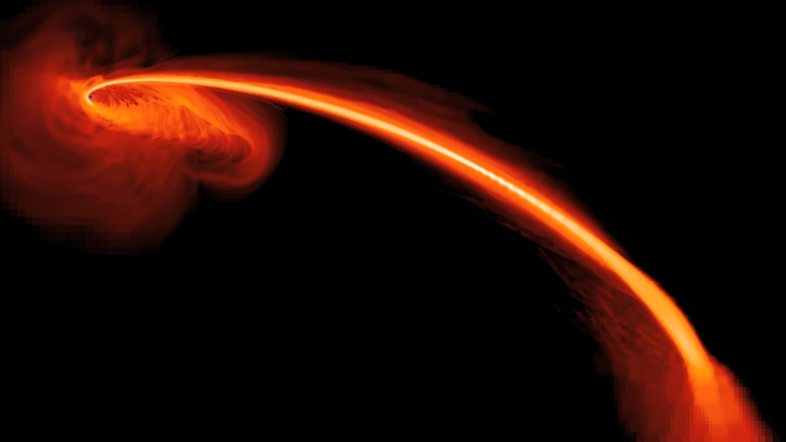

Tidal Disruption Events
Supermassive black holes lurk in the nuclei of galaxies. We have one in the nucleus of our own Milky Way! Tidal disruption events are what happens when a star wanders too close to such a supermassive black hole and the tidal forces across the star become stronger than its own self-gravity. So, instead of being swallowed whole, the star rips apart, gets stretched into a long stream of gas, part of which falls back and gets messily devoured, producing a bright flare that can outshine the whole galaxy. It's one of the few times a quiescent black hole announces itself directly, rather than through the motions of stars orbiting it.
Selected results
Result 1
...
Result 2
...